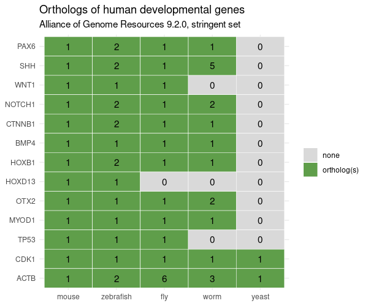

Exercise in R: Development & model organisms
Goal
By the end of this exercise you should be able to:
- join an ortholog table to a gene list with
left_join(), and fill in the missing combinations withexpand_grid()andreplace_na(); - draw a presence/absence heat map with
geom_tile(); - see how the stringency of an ortholog call changes the answer, and summarise conservation per gene and per species.
Before you start
This page builds on the Exercise. You need the packages readr, dplyr, tidyr and ggplot2. Download these two files and save them in a data/ folder of your R project:
- dev_genes.csv: 13 human genes (11 developmental genes and 2 housekeeping controls) with their HGNC IDs.
- orthologs.csv: their orthologs in mouse, zebrafish, fly, worm and yeast, from the Alliance of Genome Resources, release 9.2.0, stringent set, downloaded on 2026-11-20. One row per gene pair;
n_methodsis the number of prediction methods that agree, andbestis the Alliance’s best-match flag.
See the data README for the exact sources. Both files start with comment lines beginning with #.
library(readr)
library(dplyr)
library(tidyr)
library(ggplot2)Tasks
You met left_join() in Part 4. The new problem here is absence: the ortholog table only has rows for orthologs that exist, so “no ortholog in yeast” is a missing row, not a zero. expand_grid() builds every gene × species combination, left_join() fills in the counts where there are any, and replace_na() turns the rest into 0. Then geom_tile() draws one coloured square per cell.
R1. (read and count) Read both files with read_csv(..., comment = "#"). Show the orthologs of PAX6. Then count the orthologs per human gene and species with count(). How many rows does the count table have, and why is that fewer than 13 × 5 = 65?
R2. (fill in the zeros) Build a table grid with every combination of the 13 genes and the 5 species (in the order mouse, zebrafish, fly, worm, yeast), join the counts onto it and replace NA with 0. List the gene–species pairs with no ortholog.
R3. (heat map) Draw grid as a heat map: species on the x axis, genes on the y axis (in the order of dev_genes.csv, top to bottom), fill by whether there is at least one ortholog, and print the number in each tile. Which genes are found in yeast? Which developmental gene has the fewest orthologs?
R4. (stringency) Keep only ortholog pairs supported by at least 5 methods, count again and join onto grid. Which gene–species pairs change from “ortholog” to “none”? What kind of genes are they?
R5. (summaries) a) For each gene, in how many of the 5 species does it have an ortholog? Join the role column back on and sort. b) For each species, how many of the 13 genes have an ortholog, and how many orthologs are there in total? Why can the total be larger than 13?
Solutions
R1.
genes <- read_csv("data/dev_genes.csv", comment = "#", show_col_types = FALSE)
orth <- read_csv("data/orthologs.csv", comment = "#", show_col_types = FALSE)
orth |> filter(human_gene == "PAX6")# A tibble: 5 × 6
human_gene species ortholog ortholog_id n_methods best
<chr> <chr> <chr> <chr> <dbl> <chr>
1 PAX6 fly toy FB:FBgn0019650 6 Yes
2 PAX6 mouse Pax6 MGI:97490 10 Yes
3 PAX6 worm vab-3 WB:WBGene00006870 6 Yes
4 PAX6 zebrafish pax6a ZFIN:ZDB-GENE-990415-200 9 Yes
5 PAX6 zebrafish pax6b ZFIN:ZDB-GENE-001031-1 9 Yescounts <- orth |> count(human_gene, species, name = "n_orthologs")
counts# A tibble: 50 × 3
human_gene species n_orthologs
<chr> <chr> <int>
1 ACTB fly 6
2 ACTB mouse 1
3 ACTB worm 3
4 ACTB yeast 1
5 ACTB zebrafish 2
6 BMP4 fly 1
7 BMP4 mouse 1
8 BMP4 worm 1
9 BMP4 zebrafish 1
10 CDK1 fly 1
# ℹ 40 more rowsThe stringent fly ortholog of PAX6 is toy, not eyeless, and zebrafish has two copies. The count table has 50 rows, not 65: the 15 gene–species pairs without an ortholog have no row at all.
R2.
species_order <- c("mouse", "zebrafish", "fly", "worm", "yeast")
grid <- expand_grid(human_gene = genes$human_gene, species = species_order) |>
left_join(counts, by = c("human_gene", "species")) |>
mutate(n_orthologs = replace_na(n_orthologs, 0))
grid# A tibble: 65 × 3
human_gene species n_orthologs
<chr> <chr> <int>
1 PAX6 mouse 1
2 PAX6 zebrafish 2
3 PAX6 fly 1
4 PAX6 worm 1
5 PAX6 yeast 0
6 SHH mouse 1
7 SHH zebrafish 2
8 SHH fly 1
9 SHH worm 5
10 SHH yeast 0
# ℹ 55 more rowsgrid |> filter(n_orthologs == 0)# A tibble: 15 × 3
human_gene species n_orthologs
<chr> <chr> <int>
1 PAX6 yeast 0
2 SHH yeast 0
3 WNT1 worm 0
4 WNT1 yeast 0
5 NOTCH1 yeast 0
6 CTNNB1 yeast 0
7 BMP4 yeast 0
8 HOXB1 yeast 0
9 HOXD13 fly 0
10 HOXD13 worm 0
11 HOXD13 yeast 0
12 OTX2 yeast 0
13 MYOD1 yeast 0
14 TP53 worm 0
15 TP53 yeast 0R3.
ggplot(grid, aes(x = factor(species, levels = species_order),
y = factor(human_gene, levels = rev(genes$human_gene)),
fill = n_orthologs > 0)) +
geom_tile(colour = "white") +
geom_text(aes(label = n_orthologs)) +
scale_fill_manual(values = c(`TRUE` = "#5f9e4a", `FALSE` = "grey85"),
labels = c(`TRUE` = "ortholog(s)", `FALSE` = "none"), name = NULL) +
labs(x = NULL, y = NULL, title = "Orthologs of human developmental genes",
subtitle = "Alliance of Genome Resources 9.2.0, stringent set") +
theme_minimal()
Only the two controls, CDK1 and ACTB, have a yeast ortholog: the cell cycle and the cytoskeleton are older than animals, while the signalling and patterning genes arose in the animal lineage. HOXD13 has the fewest: only mouse and zebrafish. The fly does have a posterior Hox gene, Abd-B, but the posterior Hox genes duplicated separately in each lineage, so no one-to-one ortholog passes the stringent filter. WNT1 and TP53 also have no worm ortholog under these rules, although worms have Wnt and p53-family genes: absence means “no ortholog called”, not “no related gene”. Note the many copies: six fly actins, two zebrafish genes for several human genes (the teleost genome duplication), and five worm wrt genes for SHH.
R4.
strict <- orth |>
filter(n_methods >= 5) |>
count(human_gene, species, name = "n_strict")
grid2 <- grid |>
left_join(strict, by = c("human_gene", "species")) |>
mutate(n_strict = replace_na(n_strict, 0))
grid2 |> filter((n_orthologs > 0) != (n_strict > 0))# A tibble: 5 × 4
human_gene species n_orthologs n_strict
<chr> <chr> <int> <int>
1 NOTCH1 worm 2 0
2 BMP4 worm 1 0
3 HOXB1 fly 1 0
4 HOXD13 zebrafish 1 0
5 OTX2 fly 1 0Five pairs disappear. They include classic pairs from developmental genetics: HOXB1–lab (3 methods), OTX2–oc (4), BMP4–dbl-1 (4) and NOTCH1–glp-1/lin-12 (4 each). They are distant relatives in a family of related genes, where methods disagree about which pair is the true one-to-one ortholog. Where you draw the line decides the answer, so always report the rule you used.
R5.
grid |>
group_by(human_gene) |>
summarise(n_species = sum(n_orthologs > 0)) |>
left_join(genes, by = "human_gene") |>
arrange(desc(n_species)) |>
select(human_gene, n_species, role)# A tibble: 13 × 3
human_gene n_species role
<chr> <int> <chr>
1 ACTB 5 control: cytoskeleton, actin
2 CDK1 5 control: cell-cycle kinase
3 BMP4 4 dorsal-ventral signal (fly decapentaplegic)
4 CTNNB1 4 Wnt pathway effector (fly armadillo)
5 HOXB1 4 anterior Hox gene (fly labial)
6 MYOD1 4 muscle determination
7 NOTCH1 4 cell-cell signalling receptor (fly Notch)
8 OTX2 4 head development (fly orthodenticle)
9 PAX6 4 eye development (fly eyeless/twin of eyeless)
10 SHH 4 signal: limb and neural patterning (fly hedgehog)
11 TP53 3 tumour suppressor, DNA damage response
12 WNT1 3 signal: segment polarity (fly wingless)
13 HOXD13 2 posterior Hox gene (fly Abdominal-B)grid |>
group_by(species) |>
summarise(genes_with_ortholog = sum(n_orthologs > 0),
total_orthologs = sum(n_orthologs))# A tibble: 5 × 3
species genes_with_ortholog total_orthologs
<chr> <int> <int>
1 fly 12 17
2 mouse 13 13
3 worm 10 18
4 yeast 2 2
5 zebrafish 13 19- Most developmental genes have orthologs in 4 of 5 species, all except yeast. The two controls are found in all five. b) The mouse has exactly one ortholog for every gene, as expected for two mammals. Zebrafish has 19 orthologs for 13 genes, because of the fish genome duplication; the worm has 18 for 10 genes and the fly 17 for 12, because of gene families that expanded in those lineages (actins, wrt genes). The total can be larger than 13 because one human gene can have several orthologs in another species (“one-to-many”).
Where this leads
In Part 7 the same developmental genes come back as cancer genes: SHH, WNT1, CTNNB1, NOTCH1 and TP53 are all in this table. The join-and-fill pattern you used here works whenever “missing” means “zero”, for example when you count mutations per gene and per tumour.